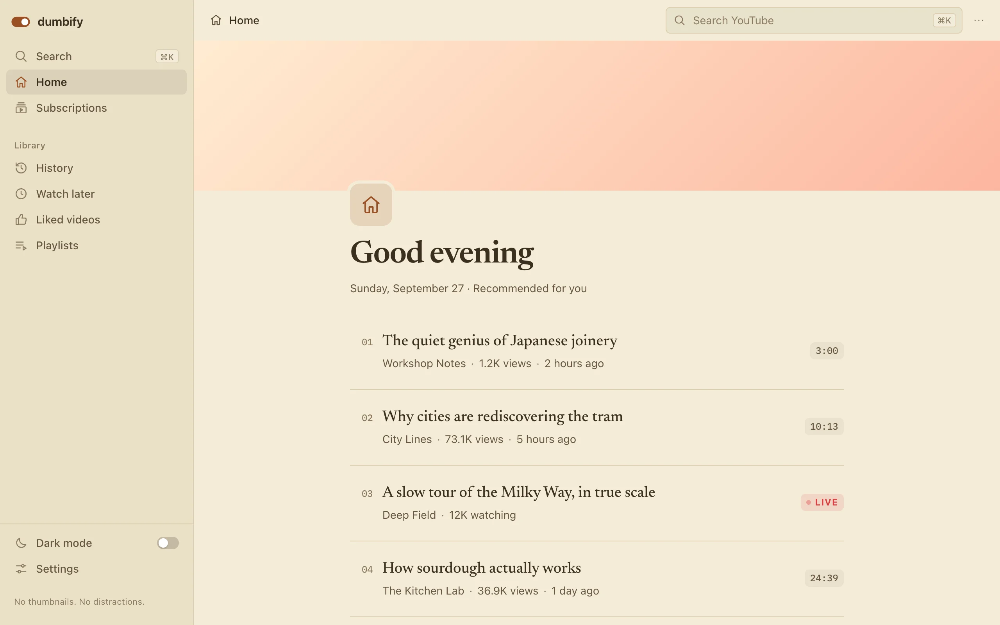
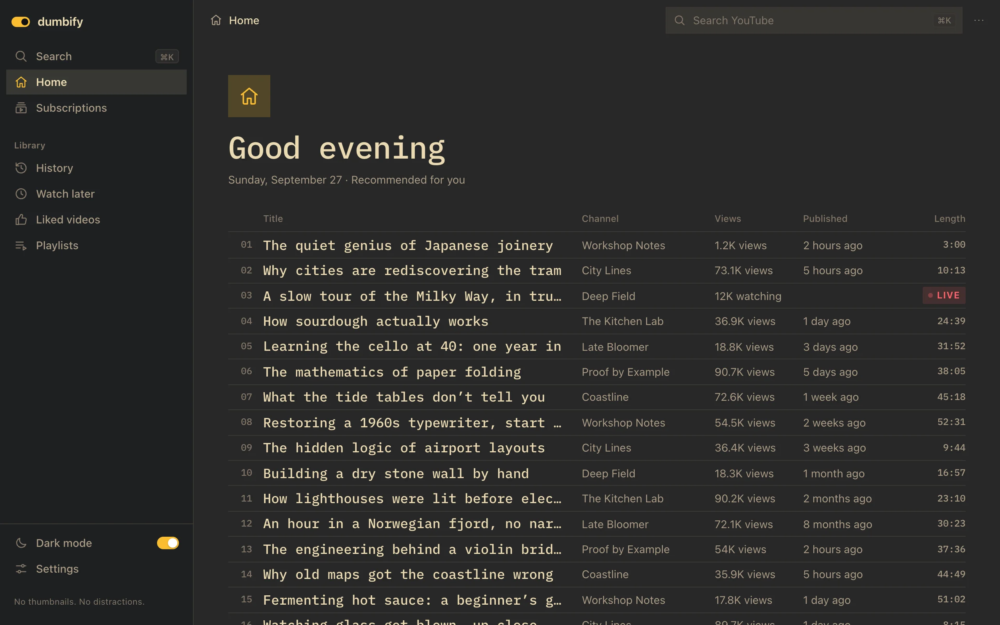
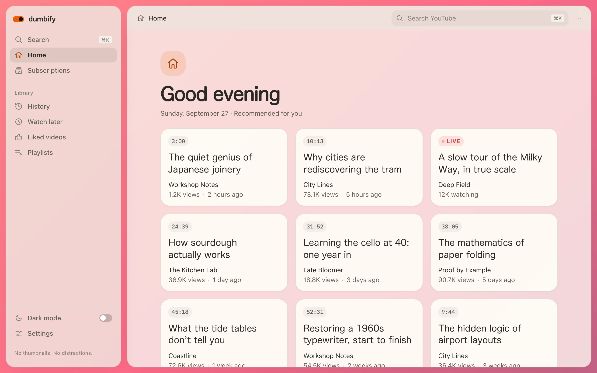
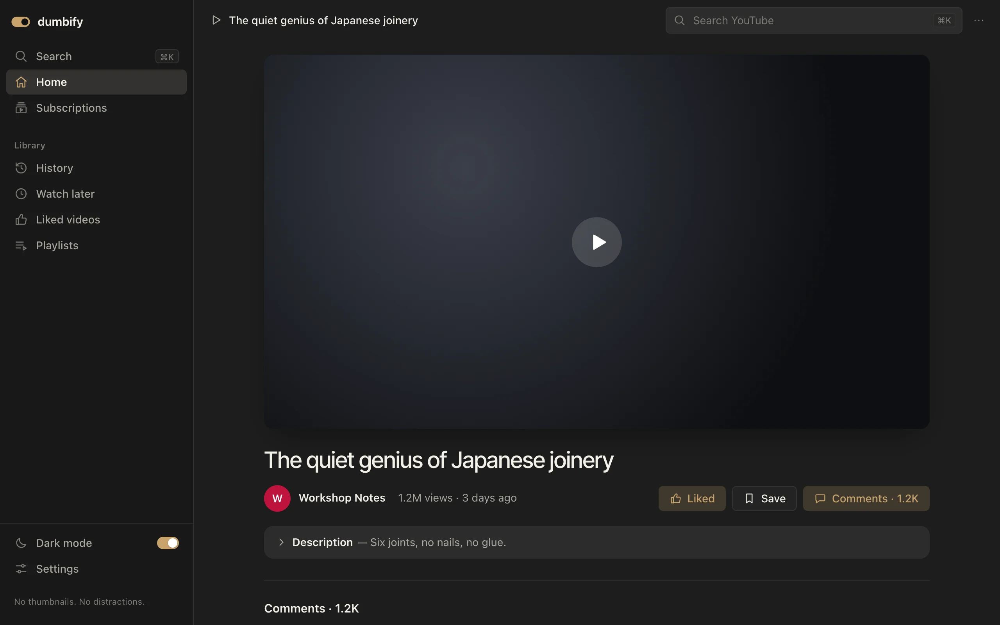
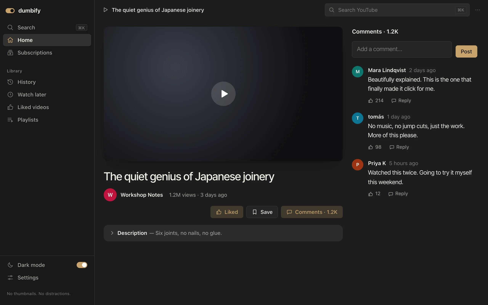

Titles, not thumbnails Every feed becomes a list you can scan in seconds: home, search, channels, history, subscriptions and watch later. You pick a video by what it is, not by who shouts loudest.
Make it yours Nineteen themes, six finished looks, list, cards or table, and wallpapers down to your own GIF. Every theme is tested for contrast, frosted glass included.
Home



The player stays. The rabbit hole goes. YouTube's own player, with quality, speed, captions and fullscreen intact, in a quiet frame. No autoplay, no end screens, no Up next.
Watch


The calm way to watch YouTube.
A real client, not a mirror. Subscribing, liking, replying and saving go straight to YouTube with your signed-in session. There's no shadow account.
Real interactionsEverything still works
⌘K search, ⌘\ sidebar, ⌘⇧L dark mode, F full screen. Ctrl on Windows and Linux.
Keyboard firstHands stay on the keys
One click in the toolbar. Switched off, Dumbify injects nothing at all, and YouTube comes back exactly as it was.
An off switchThe switch is the logo
An afternoon of Shorts is one line in History, so the video you were looking for isn't pushed down to row 47.
Shorts, foldedHistory grouped by day
More of the real feed loads as you read. When YouTube changes something Dumbify needs, it steps aside and hands you regular YouTube.
Infinite scrollAnd it fails politely
Export your settings, wallpaper included, to a file, and bring your whole setup to another computer.
BackupYour setup, portable
Private by design
Nothing leaves the tab No server, no analytics, no account. Your settings live in your browser, and the only requests go to youtube.com.